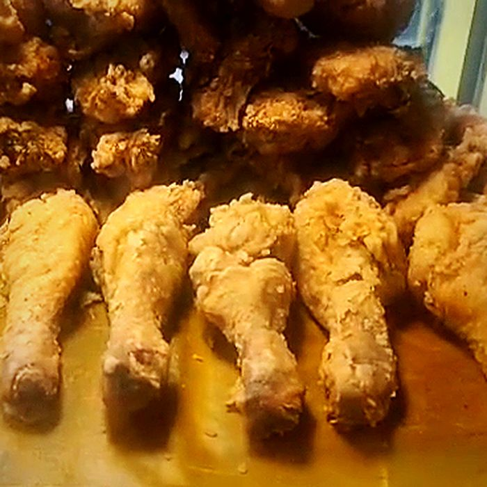

How to Make Extra-Crispy Fried Chicken at Home
Crispy fried chicken comes down to three things: a dry, starchy coating pressed firmly onto the chicken, oil that stays hot enough while it cooks, and letting steam escape after frying instead of trapping it. Get those right and you can make chicken at home that cracks when you bite it and stays crunchy long after it leaves the pan.
This guide covers each step: the coating mix, the brine, which oil to use, the temperatures that matter, and the double-fry method that makes up for the weaker heat of a home stove. A full recipe is at the end.
We fry chicken all day at Manookan Fried Chicken House on Gorordo Avenue, Cebu City. The tips below come from what we've learned at the fryer, adapted for a home kitchen.

Why homemade fried chicken goes soggy
Before fixing anything, it helps to know what goes wrong. Almost every soggy batch has one of three causes.
- The oil got too cold. Adding a lot of cold chicken at once can drop the oil temperature by 20 to 40 °C. Below about 150 °C, the coating soaks up oil instead of crisping, and comes out greasy and pale.
- The coating was wet. Water left on the chicken, or a thick wet batter, turns to steam inside the crust and softens it from within.
- The chicken steamed after frying. Hot chicken placed on paper towels, a plate or in a closed box sits in its own steam. The bottom goes soft within minutes.
Every technique in this guide targets one of those three problems.
The coating: flour, cornstarch or potato starch?
Plain all-purpose flour gives good flavor and color, but on its own it can turn bready and tough. Starches have no gluten, so they fry up lighter and crunchier. The best home coating combines the two.
| Coating | Crunch | Color | Stays crisp | Notes |
|---|---|---|---|---|
| All-purpose flour only | Medium | Deep golden | Fair | Classic flavor; can get chewy |
| Flour + cornstarch (3:1 to 2:1) | High | Golden | Very good | Our pick for home cooks |
| Potato starch | Very high | Pale | Good | Thin, glassy crust, like Japanese karaage |
| Rice flour | High | Light | Very good | Gluten-free option; easy to find in Asian stores |
Two small additions that make a big difference
- Baking powder. About 1 teaspoon per cup of flour releases tiny bubbles as it fries, giving the crust more surface area and a lighter crunch.
- Seasoning in the flour, not just the chicken. Salt, garlic powder, pepper and paprika in the coating mean every bite of crust has flavor.
Press, don't dust
At our stall, every piece is pressed firmly into seasoned flour by hand rather than lightly dusted. Pressing pushes the flour into the skin and builds the rough, craggy ridges you see in the photos. More ridges mean more surface to crisp, and more crunch in every bite.
After coating, let the pieces sit on a rack for 10 to 15 minutes. The flour absorbs a little moisture from the skin and turns slightly pasty, which glues the coating in place so it doesn't fall off in the oil.
The brine: why it's worth the wait
A brine seasons the chicken all the way to the bone and helps it hold onto its juices, so the meat stays moist even after a hard fry. You have three good options.
| Brine | Mix | Time | Result |
|---|---|---|---|
| Salt brine | 50 g salt + 1 tbsp sugar per 1 L water | 4–8 hours | Juicy, well seasoned, clean chicken flavor |
| Buttermilk | Buttermilk + 2 tsp salt per cup | 4–12 hours | Tender meat, slight tang, Southern US style |
| Filipino marinade | Calamansi juice, garlic, patis (fish sauce), pepper | 1–3 hours | Bright, savory, very Filipino flavor |
Keep brining chicken in the fridge, never on the counter. With citrus marinades like calamansi, don't go past about 3 hours: the acid starts to break down the surface of the meat and makes it mushy.
Whatever you choose, pat the chicken completely dry before coating. This is the single most skipped step at home, and it's the main reason crusts come out soft.
Best oil for frying chicken
You want an oil with a high smoke point and a neutral taste. Smoke points vary by brand and how refined the oil is, so treat these as approximate.
| Oil | Approx. smoke point | Flavor | Good for frying? |
|---|---|---|---|
| Peanut oil | ~230 °C (450 °F) | Neutral, slightly nutty | Excellent |
| Palm oil | ~230 °C (450 °F) | Neutral | Excellent; widely used in the Philippines |
| Canola / vegetable oil | ~200–230 °C (400–450 °F) | Neutral | Very good; affordable |
| Refined coconut oil | ~200 °C (400 °F) | Neutral | Good |
| Extra virgin olive oil | ~190 °C (375 °F) | Strong | Not recommended; costly and flavors the chicken |
For a full side-by-side comparison, see our guide to the best oil for frying chicken.
Use enough oil to come at least halfway up the chicken, or about 4 to 5 cm deep in a heavy pot. More oil holds its temperature better when the chicken goes in.
Can you reuse frying oil?
Yes, a few times. Let it cool, strain out the crumbs, and store it covered in a cool, dark place. Throw it out when it turns dark, smells off, foams, or starts smoking at normal frying temperature. Never pour used oil down the sink; seal it in a bottle and dispose of it with your household waste.
Temperature is everything
If you buy one tool for frying, make it a thermometer. Guessing oil temperature is the most common reason home fried chicken fails.
| What you're measuring | Target | Why |
|---|---|---|
| Oil, first fry | 160 °C (320 °F) | Cooks the meat through without burning the coating |
| Oil, second fry | 185–190 °C (365–375 °F) | Quickly dries and hardens the crust |
| Chicken, thickest part | 74 °C (165 °F) | The safe minimum for cooked chicken, per US Department of Agriculture (USDA) food safety guidance |
Measure the chicken next to the bone without touching it. Bone conducts heat and gives a false high reading.
No thermometer? Drop a cube of bread into the oil. At around 175 °C it should turn golden in about 60 seconds. It's rough, but much better than guessing. For the chicken, cut into the thickest piece: the juices should run clear with no pink at the bone.
The double-fry method, step by step
Commercial fryers hold a lot of oil and recover their heat fast. A pot on a home stove doesn't, which is why a single fry at home often gives you a choice between burnt outside or undercooked inside. Frying twice solves both: a gentle first fry cooks the chicken through, and a short, hot second fry makes the crust crunchy.
- Heat the oil to 160 °C. Use a heavy, deep pot so the temperature stays steady.
- Fry in small batches. Add 3 or 4 pieces at a time, lowering them in gently, away from you. Don't let pieces touch.
- Cook through. Fry 10 to 14 minutes, turning once or twice, until the thickest piece reaches 74 °C. Wings finish first; thighs and breasts take longest.
- Rest on a rack. Drain the chicken on a wire rack for about 10 minutes. Steam escapes and the crust firms up.
- Raise the heat to 185–190 °C. Bring the oil back up between batches.
- Second fry, 1 to 2 minutes. Fry until the crust is deep golden and audibly crackly when you tap it with tongs.
- Back onto the rack. Let it rest 5 minutes before serving. It's extremely hot inside.

How to keep fried chicken crispy after frying
- Use a wire rack, not paper towels. Paper soaks up oil, but it also traps steam underneath. A rack lets air reach every side.
- Hold it in a low oven. If you're frying several batches, keep finished pieces on a rack in a 90–100 °C oven, uncovered. They'll stay hot and crisp for up to an hour.
- Don't cover it. A lid or foil traps steam and softens the crust within minutes.
- Sauce at the table. Gravy and dips go on the side so the coating stays crunchy.
Leftovers? Our guide to reheating fried chicken so it stays crispy has exact times for the air fryer, turbo broiler, oven and pan.
Can you make crispy fried chicken in an air fryer?
Yes, but it's a different result. An air fryer makes crisp, golden chicken with far less oil, but the crust is thinner and drier than deep-fried chicken. If you go this route:
- Use the same brine and coating, and let the coated chicken rest 10 minutes.
- Spray the coating with oil until no dry flour shows. Raw flour won't brown in an air fryer without fat.
- Cook at 190–200 °C for 20 to 25 minutes, turning halfway, until the thickest piece reaches 74 °C.
- Leave space between pieces, and cook in batches if needed.
For the classic craggy crunch, deep frying still wins. For a lighter weeknight version, the air fryer does a very good job.
Extra-Crispy Double-Fried Chicken
For the brine
- 1.2 kg chicken parts (about 8 pieces), skin on, bone in
- 1 litre cold water
- 50 g salt (about 3 tablespoons fine salt)
- 1 tablespoon sugar
For the coating
- 130 g (1 cup) all-purpose flour
- 60 g (½ cup) cornstarch
- 1 teaspoon baking powder
- 2 teaspoons garlic powder
- 1 teaspoon paprika
- 1 teaspoon ground black pepper
- 1 teaspoon salt
For frying
- 1.5 to 2 litres palm, peanut, canola or refined coconut oil
Steps
- Stir the salt and sugar into the cold water until dissolved. Add the chicken, cover, and refrigerate 4 to 8 hours.
- Drain the chicken and pat every piece completely dry.
- Whisk the coating ingredients together. Press each piece firmly into the mix on all sides.
- Rest the coated chicken on a wire rack for 10 to 15 minutes.
- Heat the oil to 160 °C. Fry 3 or 4 pieces at a time for 10 to 14 minutes, until the thickest piece reads 74 °C next to the bone.
- Drain on the rack and rest 10 minutes. Heat the oil to 185–190 °C.
- Fry again for 1 to 2 minutes until deep golden. Drain on the rack, rest 5 minutes, and serve.
Fried chicken FAQ
Why does the breading fall off my fried chicken?
Usually because the chicken was wet, the coated pieces went straight into the oil without resting, or they were turned too often. Pat the chicken dry, rest the coated pieces 10 to 15 minutes, and turn them only once or twice.
Why is my fried chicken greasy?
The oil was too cool. When the temperature drops below about 150 °C, the coating absorbs oil instead of sealing. Fry fewer pieces at a time and let the oil reheat between batches.
Why is my chicken burnt outside but raw inside?
The oil was too hot for the first fry. Cook through at 160 °C first, then use high heat only for the short second fry.
Should chicken be at room temperature before frying?
Taking the chill off for 15 to 20 minutes helps it cook more evenly and drops the oil temperature less. Don't leave raw chicken out longer than that, especially in a warm kitchen.
Do I need a deep fryer?
No. A heavy, deep pot or a cast iron pan and a thermometer work fine. Never fill the pot more than halfway with oil, and keep a lid nearby. If the oil ever catches fire, turn off the heat and cover it. Never use water.
Key takeaways
- Use a flour and cornstarch coating with a little baking powder, and press it firmly onto dry chicken.
- Brine for juiciness, then pat the chicken completely dry.
- Fry in a high-smoke-point oil, in small batches, with a thermometer.
- Double fry: 160 °C to cook through, then 185–190 °C to crisp.
- Cook to 74 °C (165 °F) at the thickest part, and drain on a rack, never a plate.
Too hungry to wait for a brine? If you're near Gorordo Avenue, Manookan's trays are refilled with fresh batches all day, and every part is ₱25.